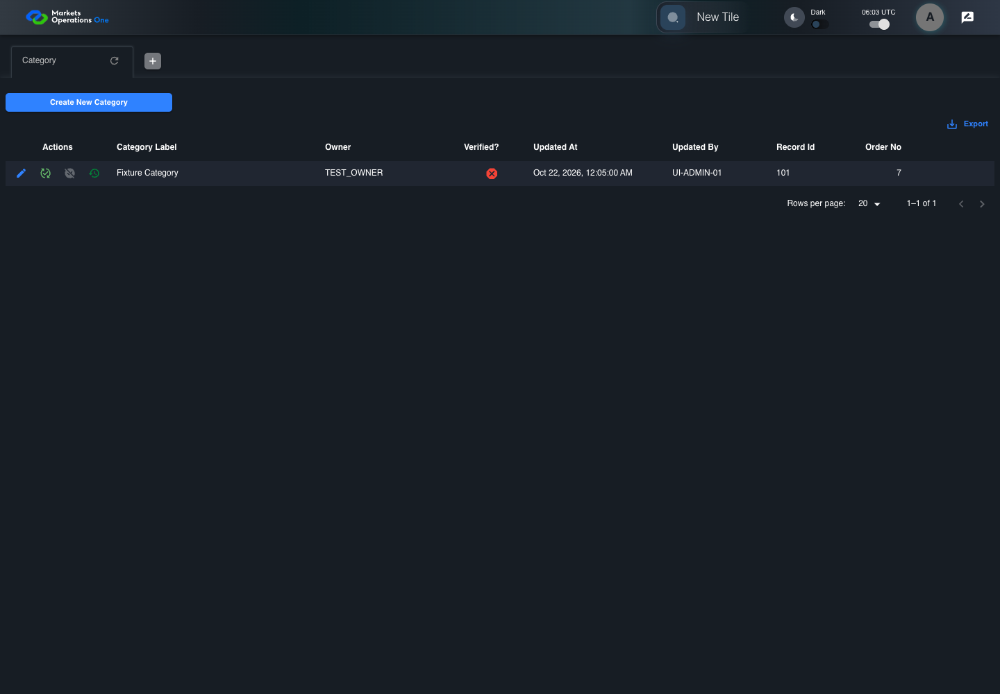
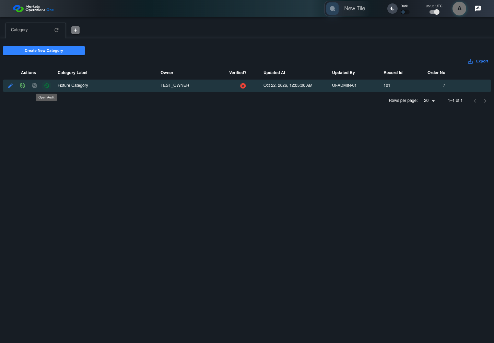

UI-RISK-008 administration source risk with live evidence
FAIL · application/run-050/ui-risk-008-administration-source-risk-with-live-evidence-de0afd6e8ae4-attempt-1 · ACTUAL_APPLICATION_LOCAL_SERVICES
Actual React administration screens. Controlled browser credentials, role, records, and BFF responses. Save probes persist the received UI payload without replacing it with expected values. Declared clock emulation controls field timers. Proposed accessibility and source-risk expectations remain separate from business approval.
2026-10-22T06:03:04.764Z to 2026-10-22T06:03:13.127Z
Assertions and result · Artifact manifest · Exact run inputs and source hashes
Result SHA-256:05bd4ca679f3841da66c6ad689127f8afefe48dead91b0cb4dc04b09a3558db0Retained failure details
[
{
"message": "Error: \u001b[2mexpect(\u001b[22m\u001b[31mlocator\u001b[39m\u001b[2m).\u001b[22mtoBeVisible\u001b[2m(\u001b[22m\u001b[2m)\u001b[22m failed\n\nLocator: locator('[role=\"tabpanel\"]:visible').getByRole('status').filter({ hasText: /(?:no|empty).*history/i })\nExpected: visible\nTimeout: 5000ms\nError: element(s) not found\n\nCall log:\n\u001b[2m - Expect \"toBeVisible\" locator('[role=\"tabpanel\"]:visible').getByRole('status').filter({ hasText: /(?:no|empty).*history/i }) with timeout 5000ms\u001b[22m\n\u001b[2m - waiting for locator('[role=\"tabpanel\"]:visible').getByRole('status').filter({ hasText: /(?:no|empty).*history/i })\u001b[22m\n",
"stack": "Error: \u001b[2mexpect(\u001b[22m\u001b[31mlocator\u001b[39m\u001b[2m).\u001b[22mtoBeVisible\u001b[2m(\u001b[22m\u001b[2m)\u001b[22m failed\n\nLocator: locator('[role=\"tabpanel\"]:visible').getByRole('status').filter({ hasText: /(?:no|empty).*history/i })\nExpected: visible\nTimeout: 5000ms\nError: element(s) not found\n\nCall log:\n\u001b[2m - Expect \"toBeVisible\" locator('[role=\"tabpanel\"]:visible').getByRole('status').filter({ hasText: /(?:no|empty).*history/i }) with timeout 5000ms\u001b[22m\n\u001b[2m - waiting for locator('[role=\"tabpanel\"]:visible').getByRole('status').filter({ hasText: /(?:no|empty).*history/i })\u001b[22m\n\n at /Users/lushevol/code/github/ratan-release-impact/workbench/e2e/audit-specs/admin-ux.spec.ts:241:151\n at AuditCapture.step (/Users/lushevol/code/github/ratan-release-impact/workbench/e2e/support/audit-fixture.ts:94:21)\n at /Users/lushevol/code/github/ratan-release-impact/workbench/e2e/audit-specs/admin-ux.spec.ts:199:31",
"location": {
"file": "/Users/lushevol/code/github/ratan-release-impact/workbench/e2e/audit-specs/admin-ux.spec.ts",
"column": 151,
"line": 241
},
"snippet": " 239 | if ((match = /option displays record ID \"(\\d+)\"/.exec(text))) { await expect(page.getByRole('option', { includeHidden: true }).filter({ hasText: new RegExp(match[1]) })).toHaveCount(1); return; }\n 240 | if ((match = /^Admin A clicks icon button named \"Audit\" inside row with Record Id \"(\\d+)\"/.exec(text))) { await app.action('Audit', match[1]).click({ timeout: 5000 }); return; }\n> 241 | if (text.includes('explicit empty-history status')) { await expect(app.panel.getByRole('status').filter({ hasText: /(?:no|empty).*history/i })).toBeVisible(); return; }\n | ^\n 242 | if (text.includes('identifies source record \"102\"') || text.includes('each cell in the \"Category ID\"')) { await expect(app.auditDialog().locator('[data-id] [data-field=\"applicationCategoryId\"]')).toHaveText(['102']); return; }\n 243 | throw new Error(`No source-risk UI binding for ${id} step ${step.number}: ${text}`);\n 244 | });"
}
]Screenshot capture: CAPTURED. Named frames: 5.
Step screenshot bindings: COMPLETE. 4/4 canonical steps have execution screenshots.
Bindings measure structural coverage only. They do not establish screenshot content quality or relevance.
Screenshot content review: NOT_REVIEWED. Recorded context: 0/5 frames. Identical image bytes: 1 repeated frames. Recorded context does not establish human visual review.
Canonical step timeline
Given Admin A is authenticated as fixture UI-ADMIN-01 with the case-specific permissions
Execution: PASSED.
1. step-01 Visible state after step 1: Given Admin A is authenticated as fixture UI-ADMIN-01 with the case-specific permissions
2026-10-22T06:03:06.085Z · 1440×1000
Step: /Users/lushevol/code/github/ratan-release-impact/workbench/tasks/ui-test-coverage-20261022/test-cases.md:10366
SHA-256:c02034eece5584d5fdecb1725743a78e3f63f08a5571d37edc17e6967ecfd24fAnd record 101 has an empty audit response
Execution: PASSED.
2. step-02 Visible state after step 2: And record 101 has an empty audit response
2026-10-22T06:03:06.982Z · 1440×1000
Step: /Users/lushevol/code/github/ratan-release-impact/workbench/tasks/ui-test-coverage-20261022/test-cases.md:10367
SHA-256:7dd425203c6e0d0a13ec27a8406a7475c8513c275eed6728edd5bee4734d34dbWhen Admin A clicks icon button named "Audit" inside row with Record Id "101" in the "Category" administration data grid
Execution: PASSED.3. step-03 Visible state after step 3: When Admin A clicks icon button named "Audit" inside row with Record Id "101" in the "Category" administration data grid
2026-10-22T06:03:07.151Z · 1440×1000
Step: /Users/lushevol/code/github/ratan-release-impact/workbench/tasks/ui-test-coverage-20261022/test-cases.md:10368
SHA-256:8efcd379ec6fdf7545a2dff67f4f35de546132b90d88b207fe9de29e449b24e3Then an explicit empty-history status for record "101" is visible in the Category administration tabpanel
Execution: FAILED.
4. step-04-failure Visible state when step 4 failed. Later steps did not execute.
2026-10-22T06:03:12.290Z · 1440×1000
Step: /Users/lushevol/code/github/ratan-release-impact/workbench/tasks/ui-test-coverage-20261022/test-cases.md:10369
SHA-256:befa07f91c0d1b419486609b2509978eab49a79eb95e69f2ae4975c7c878556f
Additional named frames

The visible state when the test failed.
2026-10-22T06:03:12.482Z · 1440×1000Step: Test source: /Users/lushevol/code/github/ratan-release-impact/workbench/e2e/audit-specs/admin-ux.spec.ts:187
SHA-256:
befa07f91c0d1b419486609b2509978eab49a79eb95e69f2ae4975c7c878556fImage bytes match frame 4. An unchanged image can be valid for consecutive assertions. This match does not establish correct step content.
Screenshots establish visible state only. Assertions and traces support functional claims.